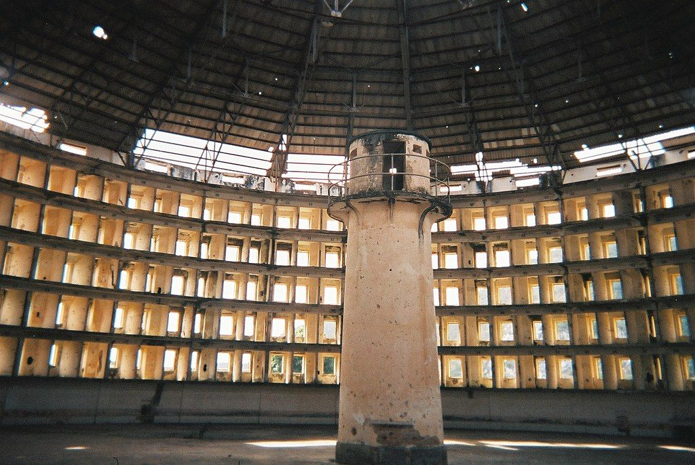
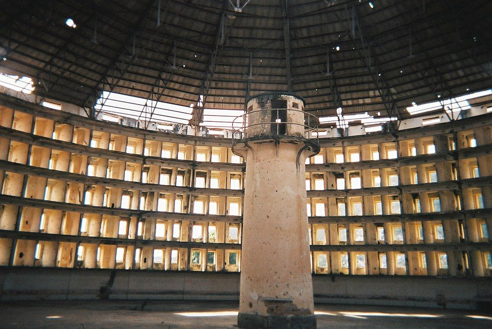
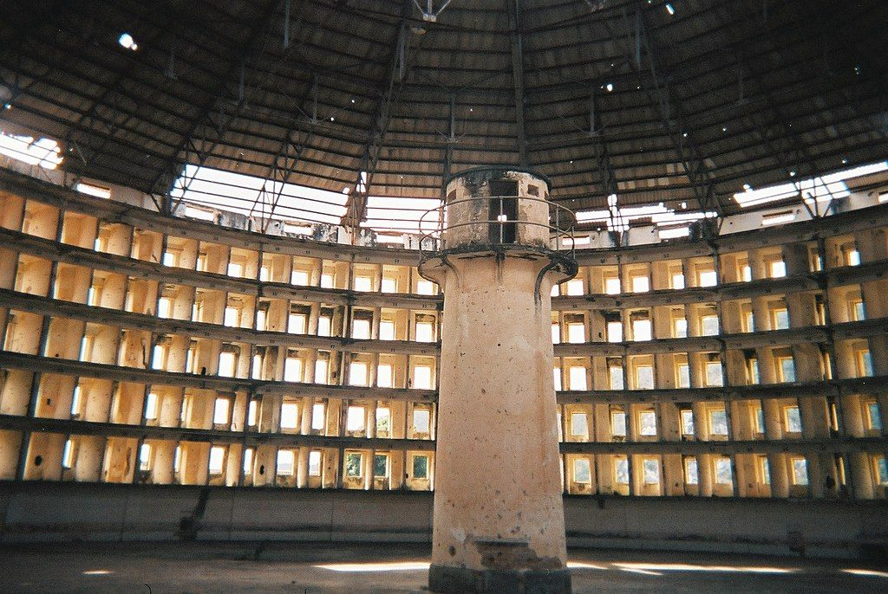

Between the Reality and the Invention
Abstract
In my research, I am interested in examining the role of balconies in societies.
A balcony is a space, where interaction happens and it acts as both: the connected and connecting. It invades and divides the undividable space.
A balcony is an exercise between public and private, silent and loud, foreground and the background. It is a place of tension between two opposing forces and in the manipulation of those forces, it shapes social relations.
A balcony has a vivid hierarchy and vertical position, which states the elevation of one over another; it gives a choice for the one on the balcony of where and how to be seen. It has a particular capacity and provides a higher ground; everything works in favor of the ones on the balcony: it provides access to the more information, it has a better sound distribution and a higher perspective. It is superior yet limited towards the inferior yet endless world.
A balcony can be considered as a divider or a connector based on the function and its interpretation by the participants in the information exchange. Historically, a balcony has performed multiple roles: from the defensive, through representative towards the ceremonial and symbolical. Balconies underwent multiple changes during their existence and served as numerous diverse platforms for maintaining the needs of a particular time; its construction was changed accordingly. At present, balconies are still used in many religions as echoes of the former power.
I want to examine the created tension and analyze how the dominant position of power provoked or affected the interpretation of actions and behaviors. I want to learn about the determining factors of geopolitical inequalities and the methods of translation of the information in contemporary society.
An approximation to a balcony
There are many different versions of the origin of the word balcony. The term derives from Old High German balcho ‘beam’ or Italian balcone ‘scaffold.’ The term balcony can also possibly arise from Persian balk 'mud' with Turkish suffix -an, or Persian بالا bālā 'big, high, upper, above' + خانه khāna 'house, upper house, room' . The word Balkan comes from Ottoman Turkish balkan, which in its turn may relate back to the Persian word "balkane", which means high, above, or proud house.
The Balkans has been described as the "other" of Europe. There has been a plan for the inclusion of the Balkans into the European Union, which extended to Bulgaria, Romania, and Croatia, along with Greece, and the rest of the region was ignored.
Territory Balkans/Balcony
The earliest mention of the name appears in an early 14th-century Arab map, in which the Haemus mountains are referred to as Balkan. Thus, the peninsula is considered to be named for the Balkan Mountains, stretching for 530 km along the parallel in the eastern part of the peninsula on the territory of Bulgaria and eastern Serbia. The name came into scientific use at the beginning of the XIX century. Then Johann August Zeune defined the Balkans as an independent peninsula of Europe.
Since ancient times, these mountains were called Haemus Mons, Stara Planina, Catena Mundi or Catena del Mundo. They served as the northern border of Greece, Thrace, and Macedonia. The Greeks considered it as a border of the civilized world. August Zeune was also convinced that the Balkan Mountains extend continuously from the shores of the Black Sea west to the Alps.
Later, the assertion of this concept was proved, but from the late XIX-early XX century, the concept of the "Balkans" is increasingly used to define a new geopolitical and geo-cultural region arising from the ruins of the Ottoman Empire in Europe.
Denying the Balkan identity of Croatia, Mirela Slukan Altić argues that only Greece, as well as parts of Albania and Macedonia, have a vivid peninsular position. “There is no geographical basis in the isolation of the Balkan Peninsula; Balkans is an exclusively geopolitical category." (Slukan Altić, 2011 – source ? ) She argues that external geostrategies and researchers wrote the concept of the Balkans as a specific geopolitical space (with the corresponding identity). This discourse fits into E. Said's famous concept of oriental studies.
Orientalism as a practice, according to Said, is a “systematic discipline by which European culture was able to manage - an even produce - the Orient politically, sociologically, militarily, ideologically, scientifically and imaginatively during the post-enlightenment period." Western representation and the social construction of the Orient as the ultimate “other" occurred in history, literature, art, music and popular culture.
"If the Balkans had not existed, they would have been invented" was the verdict of Court Hermann Keyserling in his 1928 publication, Europe. This book traces the relationship between reality and the invention.
“A region geographically inextricable from Europe, yet culturally constructed as "the other," the Balkans have often served as a repository of negative characteristics upon which a positive and self-congratulatory image of the "European" has been built.”
Balkans - a synonym for a reversion to the tribal, the backward, the primitive, the barbarian. Its inhabitants do not care to conform to the standards of behavior devised as normative by and for the civilized world.
In my research, I am interested in examining the role of balconies in societies. A balcony is a space, where interaction happens and it acts as both: the connected and connecting. It invades and divides the undividable space.
A balcony is an exercise between public and private, silent and loud, foreground and the background. It is a place of tension between two opposing forces and in the manipulation of those forces, it shapes social relations.
A balcony has a vivid hierarchy and vertical position, which states the elevation of one over another; it gives a choice for the one on the balcony of where and how to be seen. It has a particular capacity and provides a higher ground; everything works in favor of the ones on the balcony: it provides access to the more information, it has a better sound distribution and a higher perspective. It is superior yet limited towards the inferior yet endless world.
A balcony can be considered as a divider or a connector based on the function and its interpretation by the participants in the information exchange. Historically, a balcony has performed multiple roles: from the defensive, through representative towards the ceremonial and symbolical. Balconies underwent multiple changes during their existence and served as numerous diverse platforms for maintaining the needs of a particular time; its construction was changed accordingly. At present, balconies are still used in many religions as echoes of the former power.
I want to examine the created tension and analyze how the dominant position of power provoked or affected the interpretation of actions and behaviors. I want to learn about the determining factors of geopolitical inequalities and the methods of translation of the information in contemporary society.
An approximation to a balcony
There are many different versions of the origin of the word balcony. The term derives from Old High German balcho ‘beam’ or Italian balcone ‘scaffold.’ The term balcony can also possibly arise from Persian balk 'mud' with Turkish suffix -an, or Persian بالا bālā 'big, high, upper, above' + خانه khāna 'house, upper house, room' . The word Balkan comes from Ottoman Turkish balkan, which in its turn may relate back to the Persian word "balkane", which means high, above, or proud house.
The Balkans has been described as the "other" of Europe. There has been a plan for the inclusion of the Balkans into the European Union, which extended to Bulgaria, Romania, and Croatia, along with Greece, and the rest of the region was ignored.
Territory Balkans/Balcony
The earliest mention of the name appears in an early 14th-century Arab map, in which the Haemus mountains are referred to as Balkan. Thus, the peninsula is considered to be named for the Balkan Mountains, stretching for 530 km along the parallel in the eastern part of the peninsula on the territory of Bulgaria and eastern Serbia. The name came into scientific use at the beginning of the XIX century. Then Johann August Zeune defined the Balkans as an independent peninsula of Europe.
Since ancient times, these mountains were called Haemus Mons, Stara Planina, Catena Mundi or Catena del Mundo. They served as the northern border of Greece, Thrace, and Macedonia. The Greeks considered it as a border of the civilized world. August Zeune was also convinced that the Balkan Mountains extend continuously from the shores of the Black Sea west to the Alps. Later, the assertion of this concept was proved, but from the late XIX-early XX century, the concept of the "Balkans" is increasingly used to define a new geopolitical and geo-cultural region arising from the ruins of the Ottoman Empire in Europe.
Denying the Balkan identity of Croatia, Mirela Slukan Altić argues that only Greece, as well as parts of Albania and Macedonia, have a vivid peninsular position. “There is no geographical basis in the isolation of the Balkan Peninsula; Balkans is an exclusively geopolitical category." (Slukan Altić, 2011 – source ? ) She argues that external geostrategies and researchers wrote the concept of the Balkans as a specific geopolitical space (with the corresponding identity). This discourse fits into E. Said's famous concept of oriental studies.
Orientalism as a practice, according to Said, is a “systematic discipline by which European culture was able to manage - an even produce - the Orient politically, sociologically, militarily, ideologically, scientifically and imaginatively during the post-enlightenment period." Western representation and the social construction of the Orient as the ultimate “other" occurred in history, literature, art, music and popular culture.
"If the Balkans had not existed, they would have been invented" was the verdict of Court Hermann Keyserling in his 1928 publication, Europe. This book traces the relationship between reality and the invention.
“A region geographically inextricable from Europe, yet culturally constructed as "the other," the Balkans have often served as a repository of negative characteristics upon which a positive and self-congratulatory image of the "European" has been built.”
Balkans - a synonym for a reversion to the tribal, the backward, the primitive, the barbarian. Its inhabitants do not care to conform to the standards of behavior devised as normative by and for the civilized world.
 


